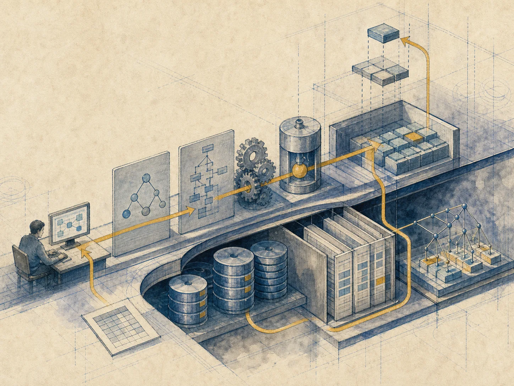
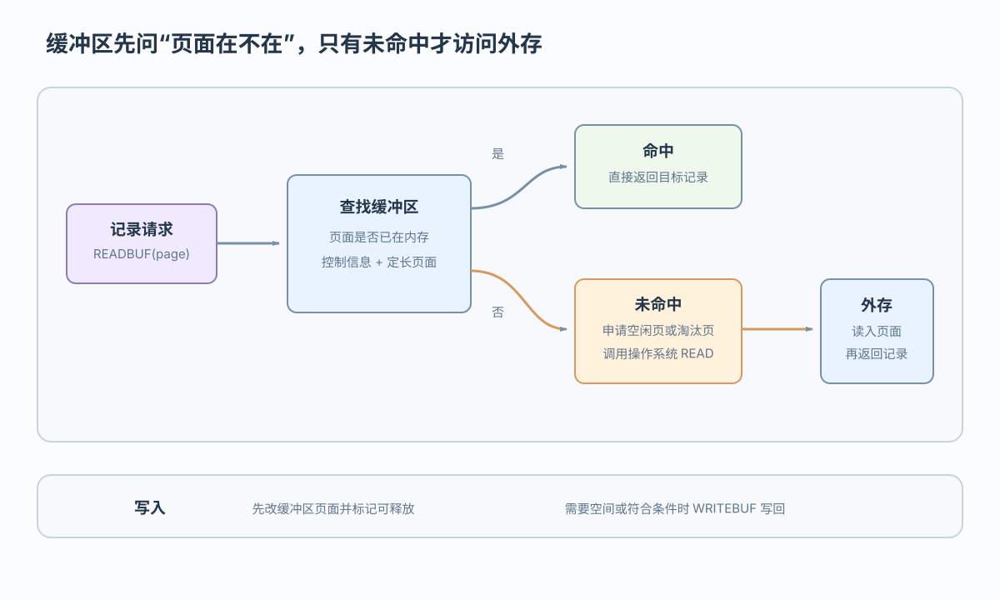

脏页
缓冲区中的页面已被修改，与外存版本不同

缓冲区把逻辑记录请求落实到页面、文件和索引路径
 VER. 2608.3
Built with impress.js
VER. 2608.3
Built with impress.js
完成本节后，你应该能够
READBUF 的命中、装入和淘汰，以及修改页的写回边界上层只面对定长页面接口，命中时通常无需访问外存

缓冲区保存可替换的页面副本，通过定长接口提供设备独立性；命中时避免外存 I/O，未命中才需要装入页面
未缓存的 SC 成绩记录所在页面需要读入目标缓冲帧
| 路径 | 缓冲区动作 | 结果 |
|---|---|---|
| 命中 | READBUF 找到含有目标元组的页面 | 直接取记录，不访问外存 |
| 未命中且有空闲页 | 申请页面并调用 OS READ 装入目标页 | 返回目标记录 |
| 未命中且候选页未修改 | 选择可淘汰页后覆盖装入目标页 | 返回目标记录 |
| 未命中且候选页已修改 | 先满足先写日志约束并写回候选页，再装入目标页 | 返回目标记录 |
脏页状态、可释放条件和写回时机分别影响淘汰决策
缓冲区中的页面已被修改，与外存版本不同
可释放标志表示页面需要空间时可以作为淘汰候选，不等于立即写回或随时可以淘汰
事务结束或缓冲区需要空间时，系统可按策略处理可释放页面；选中被修改页面时先满足先写日志约束，再写回数据页
延迟写回减少内外存交换，但数据页写回仍受事务状态和恢复约束控制
策略要结合访问局部性、内存压力和页面状态选择
| 策略 | 依据 | 直观特点 |
|---|---|---|
| FIFO | 进入缓冲区时间 | 简单但不看最近访问 |
| LRU | 最近一次访问时间 | 利用时间局部性 |
| 改进算法 | 访问、脏页和 I/O 成本 | 更贴近实际负载 |
若 A、B、C 按顺序进入缓冲区，随后再次访问 A 并请求 D，FIFO 可能淘汰 A，LRU 可能淘汰 B；被修改的候选页要先完成日志稳定保存，再写回
数据字典描述结构，数据文件保存内容，存取路径负责定位
| 信息 | 例子 | 作用 |
|---|---|---|
| 数据描述 | 数据字典／系统目录 | 解释外模式、模式和内模式 |
| 数据本身 | 元组、页面、数据文件 | 保存业务内容 |
| 数据联系 | 表关联、指针或邻接关系 | 表达实体联系 |
| 存取路径 | 索引、哈希、顺序组织 | 支持定位、扫描和访问 |
数据字典保存描述，数据文件保存业务数据，存取路径帮助定位它们；四类内容都要采用合适的物理组织
堆文件、顺序文件、哈希文件和 B+ 树文件适合不同访问模式
| 组织方式 | 主要特点 | 适合的访问 |
|---|---|---|
| 堆文件 | 记录通常无序存放，不维护全局顺序 | 插入简单、无序扫描 |
| 顺序／索引顺序文件 | 顺序文件按记录顺序组织，索引顺序文件增加定位信息 | 顺序扫描、批处理、范围访问 |
| 哈希文件 | 用哈希函数把键映射到桶 | 等值点查询 |
| B+ 树文件（有序索引） | 多级有序结构，叶结点支持顺序访问 | 等值、范围和有序访问 |
用户只面对逻辑表，系统在已有路径中选路并保持索引一致
用户或管理员通过 CREATE INDEX、DROP INDEX 改变可用的存取路径集合
查询优化器只在已有索引路径、顺序扫描等候选方案中选择执行方案
更新索引键时同步修改相关索引项，更新非索引属性时通常不改变该索引项
逻辑表与独立索引路径分离，用户无需知道物理布局；建立、选择和维护由不同系统职责完成
记录请求经页面访问，由文件组织与索引完成物理定位
READBUF 命中直接返回，未命中准备页面并调用 READ
选择可释放候选页，选中已修改页时先写回
数据文件保存数据，索引提供路径，逻辑表不暴露物理布局
未缓存的 SC 成绩记录读取依次经过缓冲区、文件组织、索引路径和外存 I/O
READBUF、申请缓冲页、淘汰、OS READ 的顺序是什么？CREATE INDEX、优化、维护各做什么？用户 SQL 为何不变？